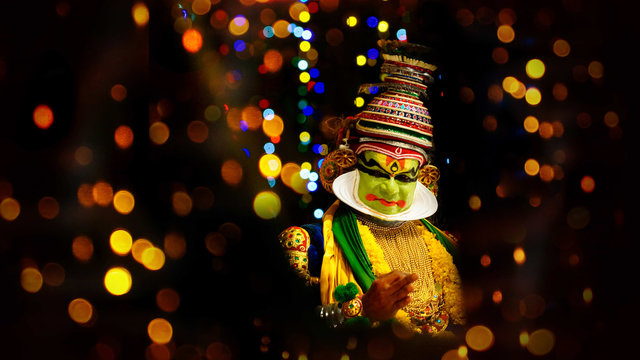
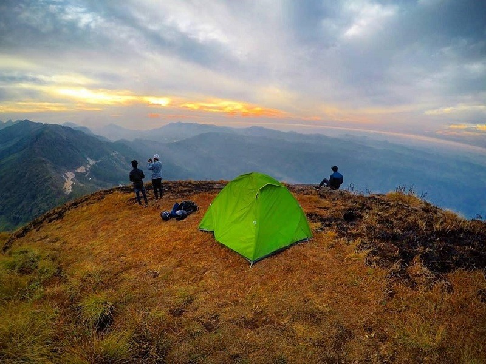

Places to visit in Alleppey: Kumarakom Bird Sanctuary, Vembanad Lake, Mannarasala Temple, Ambalapuzha Temple, St. Andrew's Forane Church, Pathiramanal, Pandavan Rock, Edathua Church, etc. There is a diversity among the many places to visit in Alleppey, from the rewarding sight of the sea to the wriggling inlets of backwaters and jungle streams- No wonder Alleppey was called the “Venice of the east” by Lord Curzon. The concept of houseboats which is locally called Kettuvallam in Malayalam is a primitive practice in Kerala. Located around 53 kilometers from Cochin, the town is celebrated for its backwaters which connect Cochin and Kumarakom to the North. Besides backwaters and the sea, Alleppey is also famous for its ageless temples, serpentine canals draining into the ocean, colorful lagoons, rice paddies, and a 150-year old lighthouse. While you are soaking up the laid-back coastal bliss, do try to visit the famous Andhakaranazhi Beach- the beauty gets amplified during sunset hours. The floating ground to the crowd-pulling houseboats is none other than the longest lake in India- Vembanad lake. The tour of Vembanad lake is mostly coupled with Pallippuram island which is a picturesque petite land in the middle of the lake. Alleppey is just more than backwaters and the beaches, it has a history that is worth learning about. A trip to this coastal paradise is total bliss.
PLACES TO EXPLORE
01 KUTTANAND BACKWATERS

One of the best places to visit in Alleppey is Kuttanad Backwaters. This isn’t a place, it’s a phenomenon. It is a spectacular lagoon, surrounded by the beauty of lakes, rivers, canals, misty mountains and ethereal landscapes.
The experience of floating along the pristine backwaters on a houseboat is inexplicable. You will have to live it to know it! The place is also known as the ‘Rice bowl of Kerala,’ for its stunning rice plantations. If you are in Alleppey for a day, then this place should be your entire itinerary.
Location: Kuttanad Taluk, Alappuzha district, Kerala—688504.
Read more
02 MARARI BEACH

If you want to unwind completely, then the Marari Beach is a must-visit destination for you. The sleepy little village located close to Marari Beach is what makes this beach distinct and attractive, inviting people from all over the world to learn and understand the culture of the Indian state of Kerala.
This beautiful destination is known for being a beach symphony, thanks to its glistening sands and crystal clear waters. Watching sunrise and sunset here is quite a romantic experience that couples would love to enjoy. The place is rated as one of the World’s Top five Hammock Beaches by the National Geographic Survey.
Marari Beach is known for providing unique experiences to travelers. Taking them away from modern life, this beach gives them an opportunity to unwind and to enjoy the different facets and bounties of life and nature. The village by the sea is one of the best places to visit in Alleppey where one can go to learn more about the culture and heritage of Kerala
Read more
03 ST MARY'S FORANE CHURCH

This beautiful church traces its existence back to 835 AD and is known for its events, Friday Liturgy and educational institutions. Currently, the church is a world-renowned center of pilgrimage, where one can know more about the culture and lifestyle of the Christians.
This is one of the biggest churches and parishes of the Archeparchy of Changanassery. Currently, the church is known for housing 2500 families and is one of those Alleppey tourist places that are popularly visited by the masses. The church organizes two feasts or festivals every year. The first one of them is St. Mary’s Feast. Since the church is dedicated to the Virgin Mary, hence every year on the third Sunday of September, a feast is organized by the Church. People visit the church on this day and participate in the festival wearing special costumes for the procession and mass.
The other feast celebrated here is St. Sebastian’s Feast. Fireworks and other dazzling display of colors make this feast remarkable, interesting and fun. The gorgeous decorations, feast and regal look of the church make it one of the best places to visit in Alleppey.
Read more
04 ALLEPPY LIGHTHOUSE

Famous as the Alappuzha lighthouse, the Alleppey lighthouse can be spotted from miles away. A humongous tower celebrating the solitude by the coastal strip wearing strips of red and white is how it is best reminisced.
The phenomenal tower was first installed in March 1862, almost 148 years ago. Located at around 4 kilometers ahead of the Alappuzha town, Alleppey or Alappuzha lighthouse grants a panoramic 360-degree view of the ocean as well as the territorial land of Alleppey which is majorly thick and lush foliage.
Flaunting its badge of being one of the oldest lighthouses of Kerala, its construction dates back to the time when Marthanda Varma- II Maharaja owned the throne of the region
Read more
05 ST. ANDREW'S BASILLICA ARTHUNGAL

The largest shrine of St. Sebastian in the whole world, this church is one of the most popular Alleppey tourist places. The prestigious church was established in the 16th century and rebuilt in 1584, under Father Jacomo Fenicio, who was known to heal people with his touch. It has been renovated many times in history but always it has always stood tall and strong. With its majestic architecture and proximity to the Arthunkal Beach, St. Andrew’s Basilica is probably the most popular spiritual edifice in Alleppey.
Read more
PHOTO GALLERY
- 
- 